Turning a marketplace the right way round
My only non-Yapily case study, and the clearest example I have of research changing a business model rather than a screen.
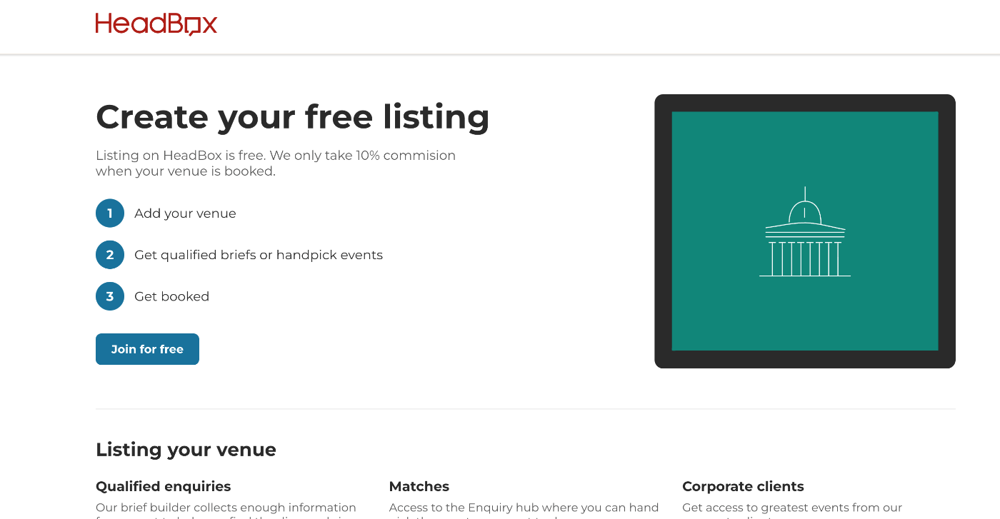
AT A GLANCE
Summary
SITUATION
HeadBox was a two-sided marketplace where guests searched a directory of venues, filtered, messaged two to four of them and waited. Around one in ten searches turned into anything. Guests aren’t event experts — most plan one event a year — so faced with a directory they shortlisted a few venues, googled them and rang them directly, off the platform entirely. Hosts received enquiries from every direction with almost none matched to their venue, and only 20% of enquiries ever received a proposal. Around 80% of the company was sales and account managers matching enquiries to venues by hand out of spreadsheets and slides.
TASK
As Lead Product Designer I was asked to improve conversion. The brief assumed the marketplace needed to work harder — a better directory, better search, better matching — which is what every previous attempt had assumed too. The research took me somewhere else. What I concluded, and proposed, was that the shape of the marketplace was the problem rather than its execution, and that fixing conversion meant inverting who did the difficult part. The company changed its revenue model as a consequence.
ACTIONS
- Ran three rounds of research with 45 customers and non-customers, much of it on site in the venues themselves, plus usability sessions and internal research with the sales and account management teams.
- Identified that the expertise was on the wrong side: guests who do this once a year were being asked to make expert decisions, while hosts who do it daily were handed a queue they couldn’t act on.
- Designed the inversion — guests complete a short wizard capturing what they need, enquiries pool into a central feed, and hosts choose the events they want.
- Rebuilt venue creation around structured capacity, layout and suitability rather than prose, in resumable steps, with the fields the feed depends on made unavoidable.
- Tested the cheapest thing that produced real evidence at each stage: the Enquiry Hub shipped London-only capped at £10k; the feed’s first prototype was a spreadsheet; guest-side prototyping started as a Google Form, before moving through Figma into coded prototypes.
- Established the design system, governance framework and research practice used across the organisation.
RESULT
- £150,228 ARR from 117 paying venues within three months — four times the prior revenue model, and the company’s first scalable, profitable product.
- More than 1,500 leads in the first month.
- Brief completion improved directionally from roughly 50% to around 75% after the guest flow was simplified.
- Hosts logged in every day from launch, which is the exact thing every previous attempt had failed to achieve.
- The company pivoted its business model on the result, moving from commission on the sale to venues paying for access to the feed — which also designed out the off-platform leakage, because there was no percentage left to avoid.
- Approximately 90% of the original product structure remains in the current experience, and the wizard is still HeadBox’s front door in 2026. Credit, precisely.
An Airbnb for event spaces, converting at 10%
HeadBox was a two-sided marketplace: search a directory of venues, filter, message two to four of them, wait. Around one in ten searches turned into anything.
The old homepage stated the problem without meaning to. The first thing it asked was what type of Space?, a question that assumes the person already knows the answer. Further down sat an account management phone number, which is what a business does when the product can’t carry the customer on its own.
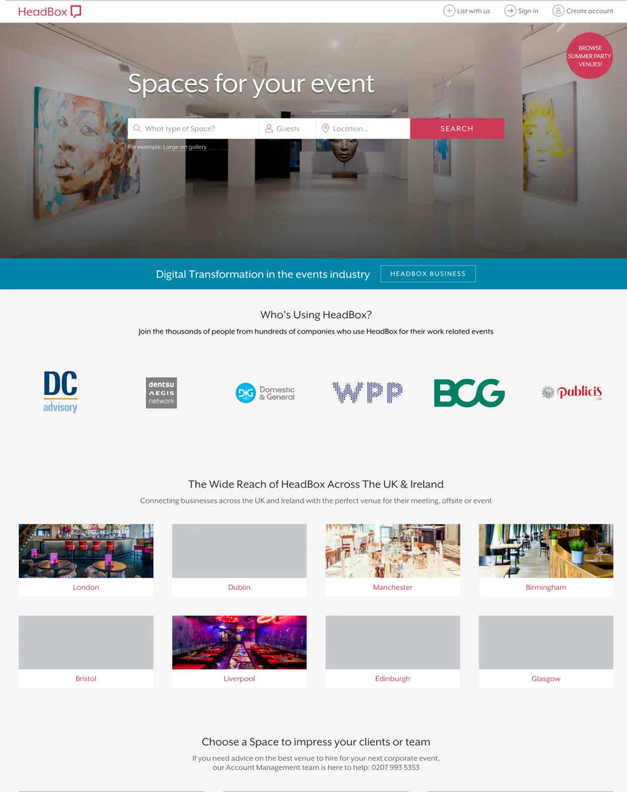
Both sides were failing, for opposite reasons
Three rounds of research with 45 customers and non-customers, usability sessions, and internal research with the sales and account management teams, alongside observation of the existing journey, support and chat analysis, and a review of thousands of messages between guests and venues. Much of the host research was done on site rather than over video, in venues ranging from local pubs to Kensington Palace and the O2. The picture that came back was symmetrical.
Guests were overwhelmed, not underserved
They aren’t event experts, most plan one event a year and don’t know what they want or what it should cost. Faced with a directory and too many options, they’d shortlist a few venues, Google them, and ring them directly. Off the platform entirely.
The behaviour that looks like poor conversion was people getting the job done outside the product, because the product was harder than a phone call.
Hosts were drowning in undifferentiated leads
Enquiries arrived from every direction, almost none matched to their venue, so the genuine ones got buried and hosts stopped logging in. Only 20% of enquiries ever received a proposal.
Some of the leakage was deliberate. Passing contact details outside the platform to avoid the commission is a structural weakness of any marketplace taking a percentage, not a policing problem, a design one.
A CRM for venues, built before I joined, was meant to solve the host side. Its own marketing page made the case against it: 57% of venue enquiries arrive outside office hours, and the tool existed to capture them around the clock. A product whose entire value proposition depends on people logging in, that people won’t log into, has no value proposition.
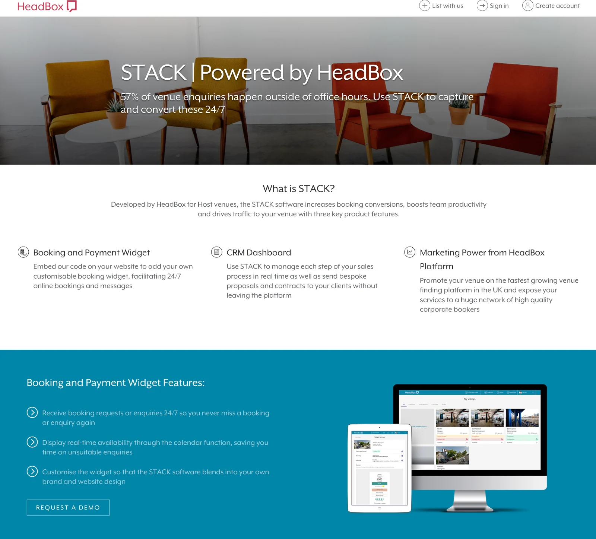
Pitched as the tool that would organise every enquiry in one place. Venues wouldn’t sign in, so the enquiries sat unanswered.
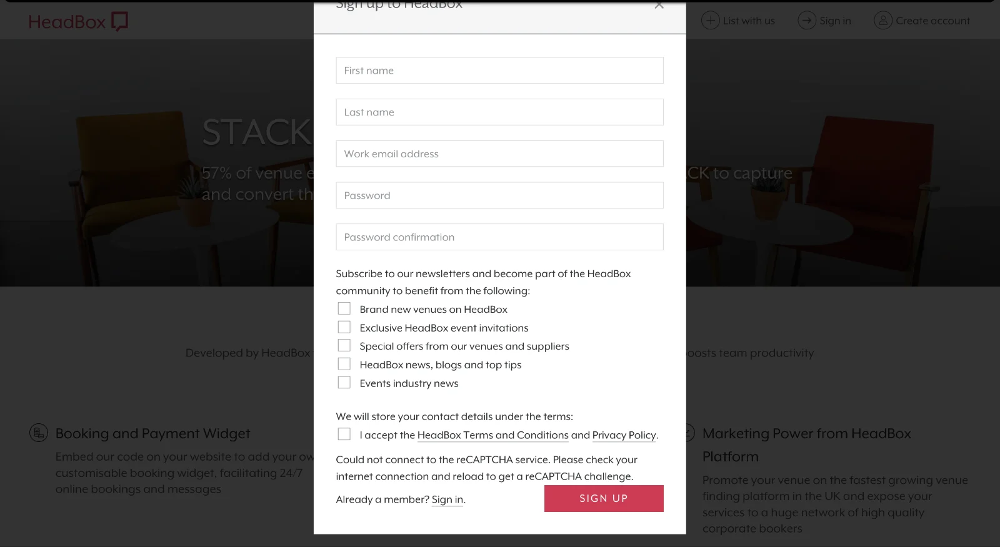
57% of enquiries arrive outside office hours, the argument for the tool, and the reason it couldn’t work as a thing you log into.
And the company was absorbing the difference
Around 80% of the company was sales and account managers, running the business out of spreadsheets and slides, matching enquiries to venues by hand, chasing both sides.
That works for a handful of large corporate accounts. It doesn’t work for the many small and medium ones, which is where the volume was. The same pattern I’d meet again at Yapily: a product gap that presents as a headcount need.
In their own words
Three of the customer interviews behind the research, recorded with permission. Each opens on YouTube.
The insight: the expertise was on the wrong side
We were asking guests, who do this once a year, to make expert decisions. And we were handing hosts, who are genuine experts and do this daily, a queue they couldn’t act on.
Every previous attempt had tried to make the existing shape work harder, a better marketplace, an agency model, a CRM. None of them questioned who was being asked to do the difficult part.
The bet: capture requirements, let experts choose
Guests complete a short wizard that captures what they need rather than browsing a directory. Those enquiries pool into a feed. Hosts choose the events they want, rather than events choosing them.
The revenue model changed as a consequence rather than as a goal. Venues pay for access to the feed instead of commission on the sale — which also designs out the off-platform leakage, because there’s no percentage left to avoid. Marketplace to SaaS.
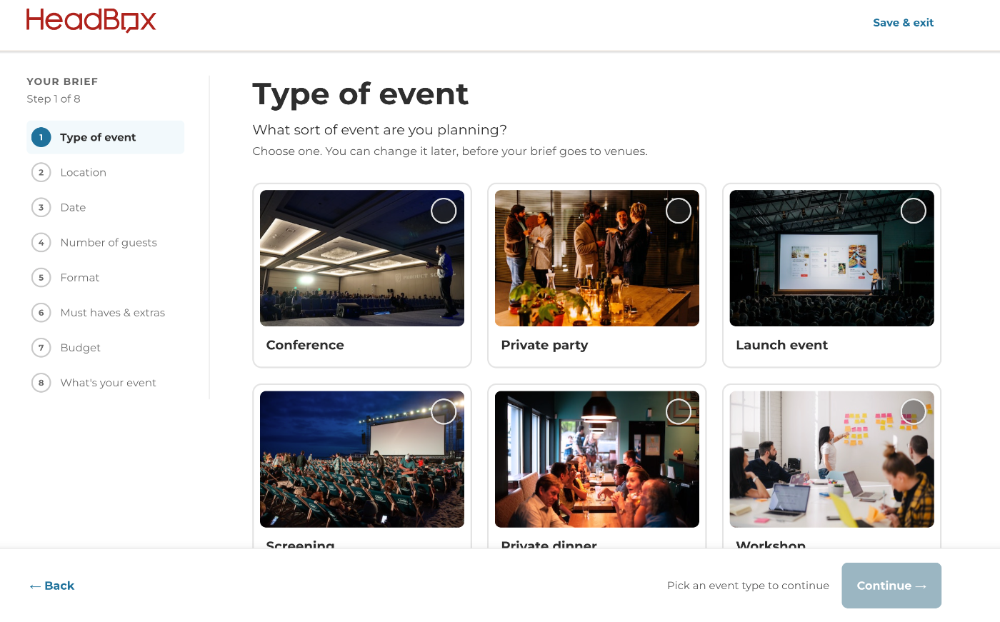
Venue creation, rebuilt around what the feed needs
Listing a venue had been a long form built for a directory page, prose descriptions, galleries, a wall of optional fields. Once matching moved to the host, the listing’s job changed: it exists so a host can be shown the briefs worth their time.
The range is what forced the structure. Host research was run on site, in venues from local pubs to Kensington Palace and the O2, and no single prose description can serve a feed that has to match a pub back room and an arena against the same brief. Capacity, layout and suitability had to stop being copy and become data.
So the form was rebuilt around structured capacity, layout and suitability rather than copy, split into resumable steps, with the fields the feed depends on made unavoidable and the rest genuinely optional.
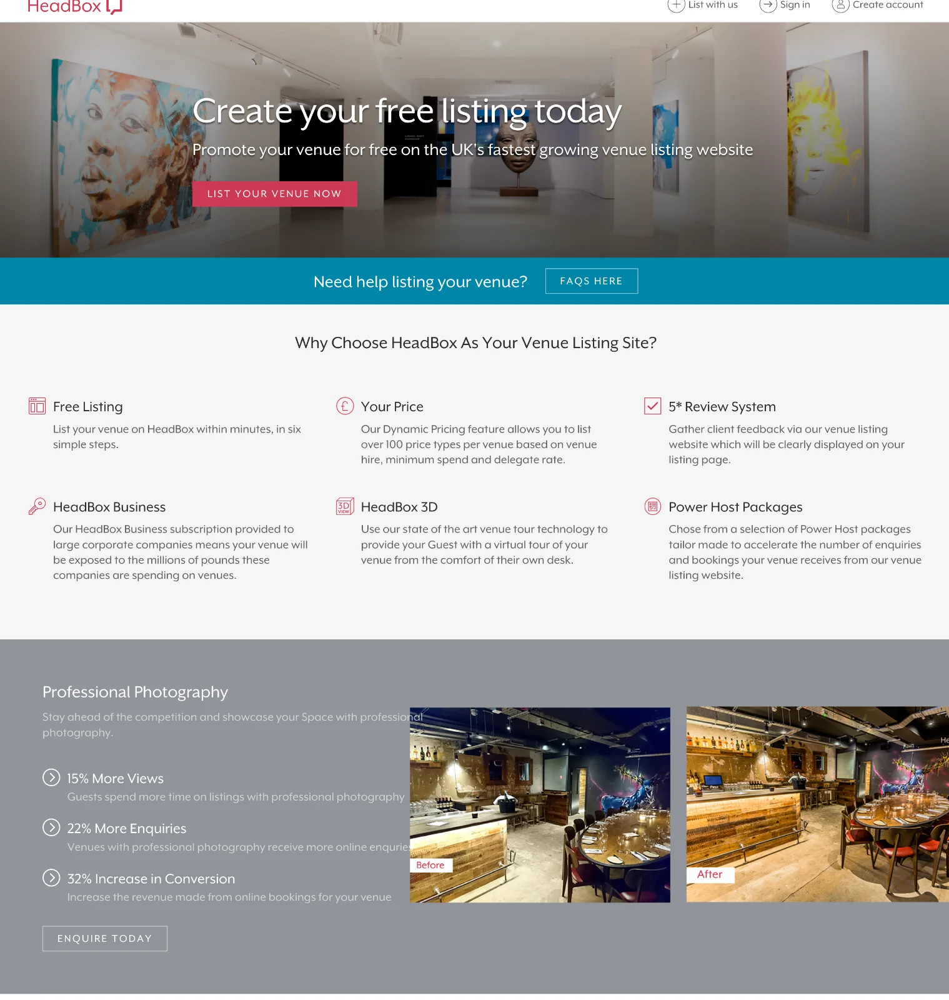
Testing it before building it
The Enquiry Hub shipped first as a deliberately small experiment: London only, capped at £10k. It showed the platform connected hosts and guests well but converted poorly, which is what justified the larger bet rather than assuming it.
The first prototype of the feed was a spreadsheet: a list of recent enquiries, filtered, shown to twenty venues. Hosts called the guests they matched with, and eighteen of the twenty events became confirmed bookings. That established both things we needed to know — that venues were better at matching than any algorithm we could have written, and that they would pay for access — before anyone built anything. It evolved through Figma into coded prototypes.
Guest-side prototyping started as a Google Form, for the same reason. Find the cheapest thing that produces real evidence.

What it produced
£150,228 ARR from 117 customers within three months, four times the prior model’s performance, and the company’s first scalable, profitable product.
Hosts logged in every day from launch. That’s the number I’d point at, because it’s the exact thing every previous attempt had failed to achieve. A tool venues wouldn’t open leaked revenue; a feed they check daily is the whole thesis proven.
The model outlived me
The wizard is still HeadBox’s front door in 2026, and the three steps beside every screen are the same ones: tell us what you’re looking for, we share your enquiry with suitable venues, venues message you. Seven years is a reasonable test of whether a structural bet was right.
The screens have moved well beyond anything I shipped, and the best of them makes the original argument better than my version did, the budget step doesn’t just ask what you want to spend, it tells you what things cost before asking you to commit.
The ordering carries the argument too. One product asks who you are before it asks what you want; the other earns the personal details by being useful first.
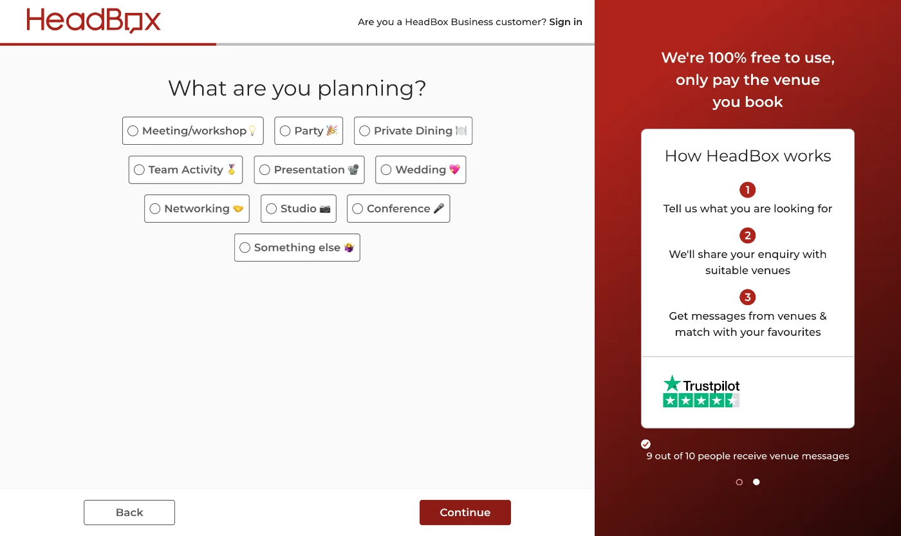
The opening question is about the occasion, not the venue. Nine plain options where the old site asked what type of Space?
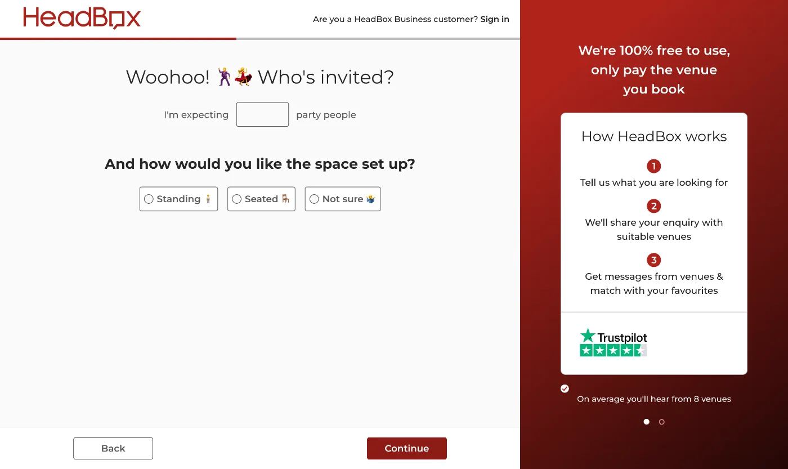
Headcount and standing or seated. Two answers a guest always has, and the two a host most needs to triage on.
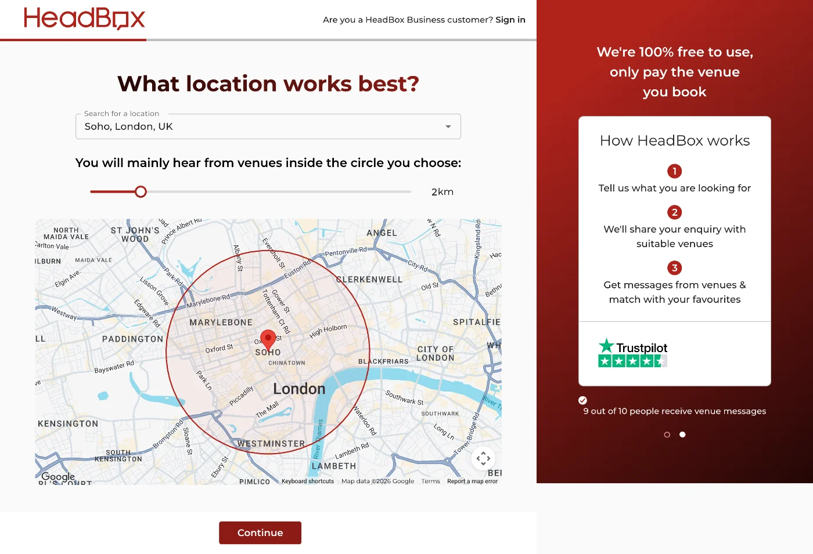
A radius slider with a plain statement of the consequence: you’ll mainly hear from venues inside the circle. The mechanism is visible rather than implied.
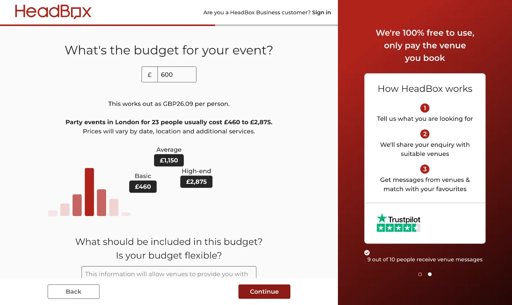
A party for 23 in London usually costs £460 to £2,875, plotted, and converted to per-head. The expertise gap closed directly: the product tells you before it asks you.
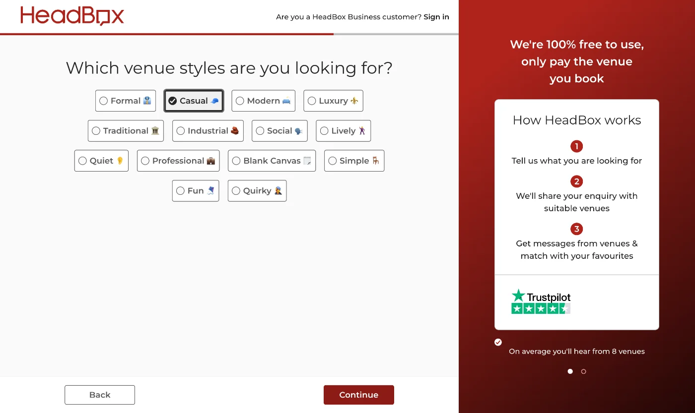
Formal, casual, industrial, blank canvas. Vocabulary a non-expert already owns, which is also structured enough for a host to filter on.
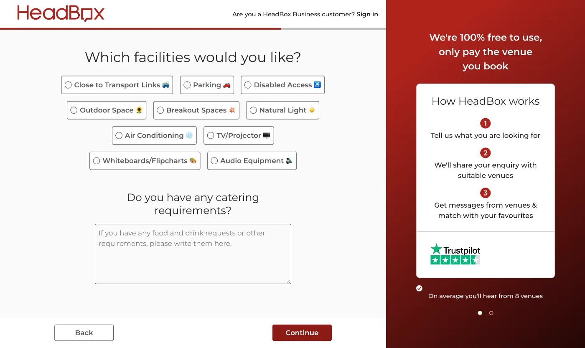
Structured requirements plus one free-text field. The structure serves matching; the free text catches everything the structure would have lost.
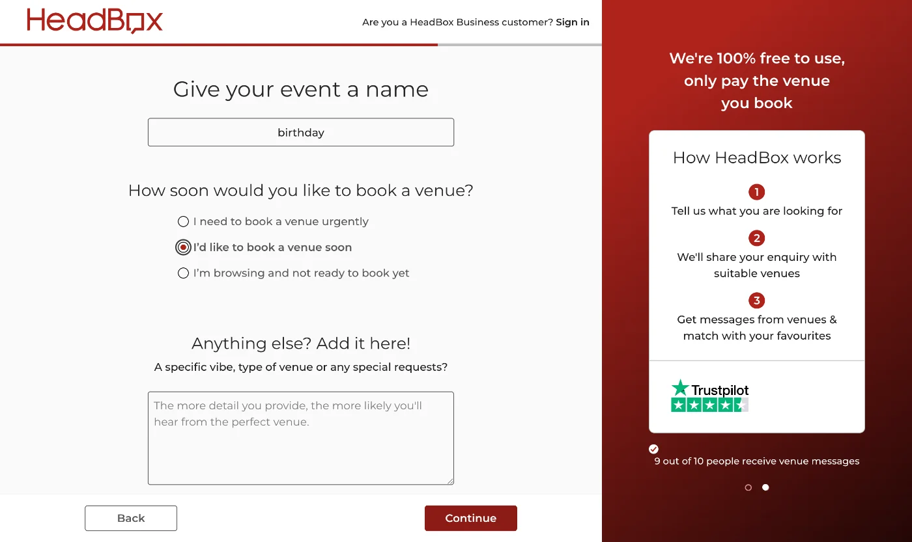
Lead qualification collected from the guest, in the guest’s own interest. It’s what lets a host triage a feed instead of treating every enquiry as equivalent.
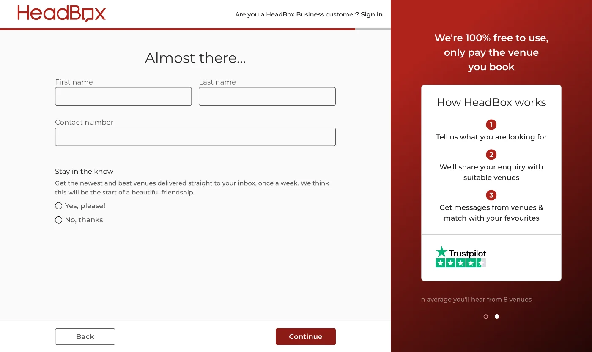
Name, phone and marketing preferences come last, after everything about the event. The 2019 signup modal asked for all of it before it asked anything.
LIVE IN 2026 · EVOLVED BY OTHERS
Credit, precisely
I designed the inversion and the first version of the flow, and led the research that produced it. The current wizard is years of other people’s work on top of that. I’d claim the structure, not the screens.
I also established the design system, governance framework and research practice used across the organisation while I was there.
What I’d do differently
I’d have pushed to kill the old CRM sooner. We ran both for longer than we needed to, and it split attention across two models when only one of them was working.
I’d have instrumented the host side harder from day one. We knew hosts were logging in daily, which was the headline. What we couldn’t say precisely was which enquiries they picked and which they skipped, and that’s the data that would have made the matching better rather than just the access.
What I took from it
Every previous attempt had asked how to make the existing shape work harder. The one that worked asked who should be doing the difficult part, and moved it. That’s a question about the model, not the interface — and it’s the same instinct behind the work I did later on open banking infrastructure, where the most valuable findings were rarely about screens either.